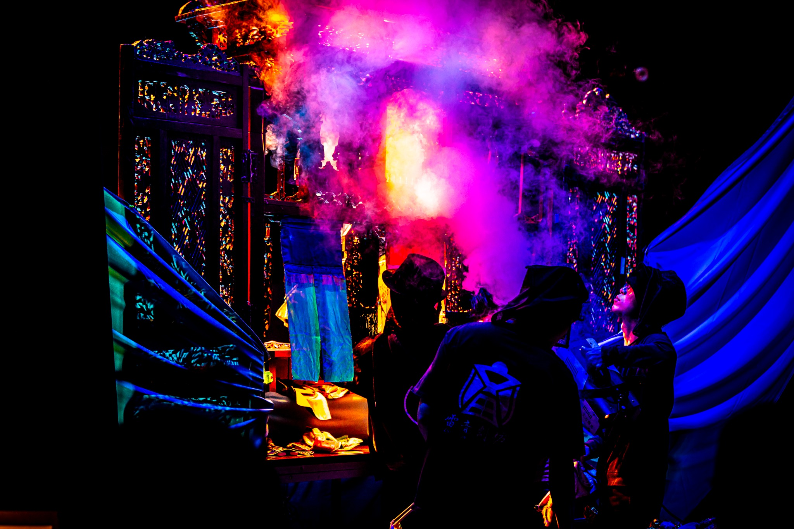
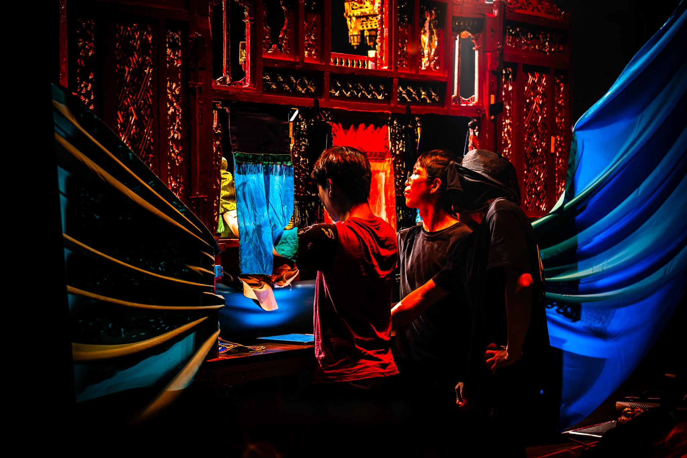
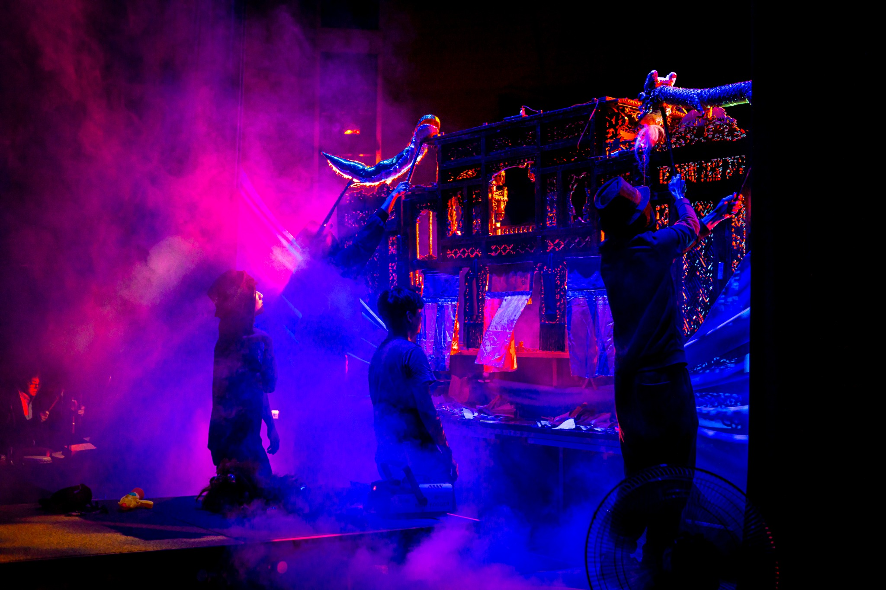
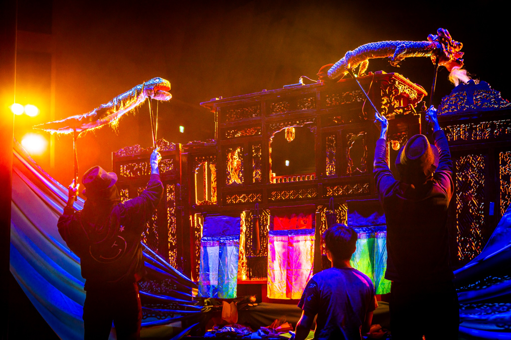
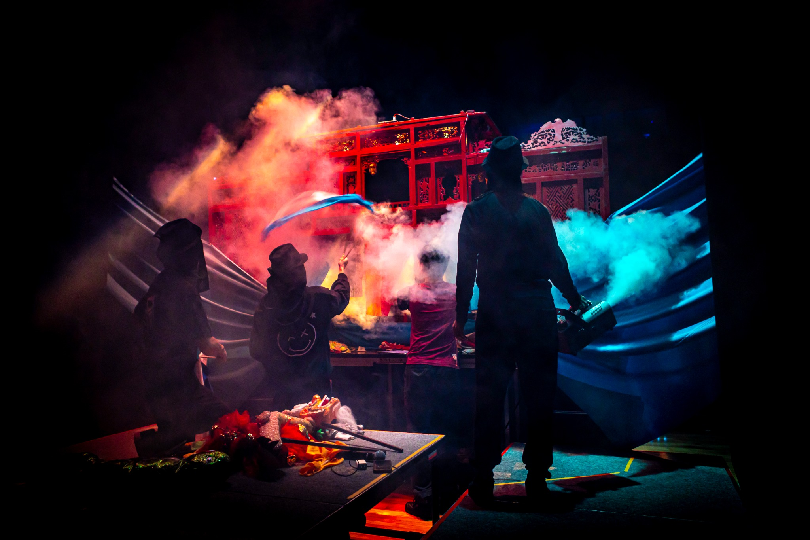
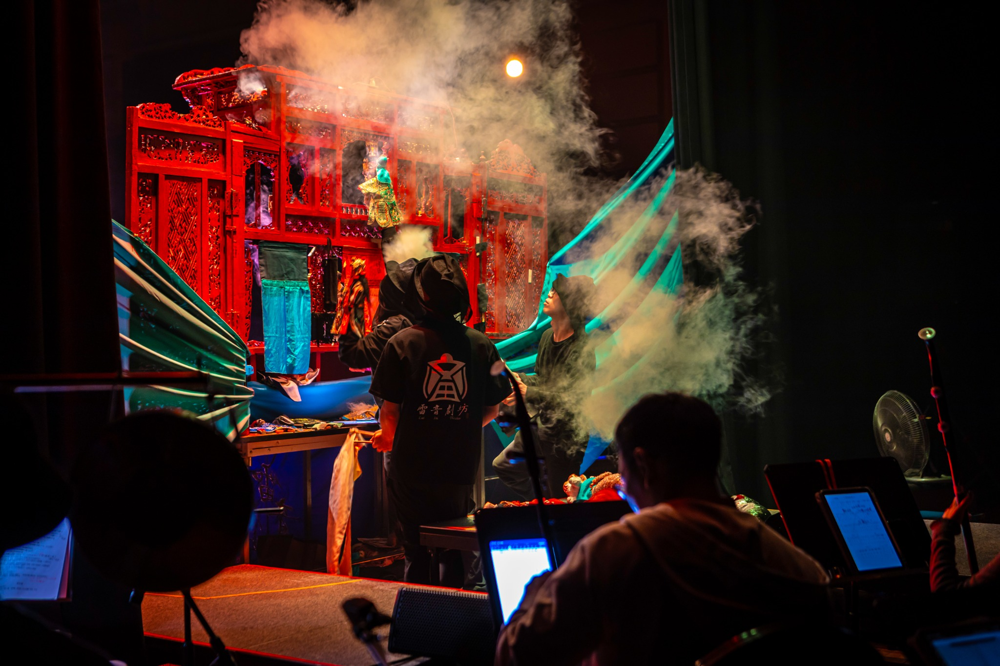
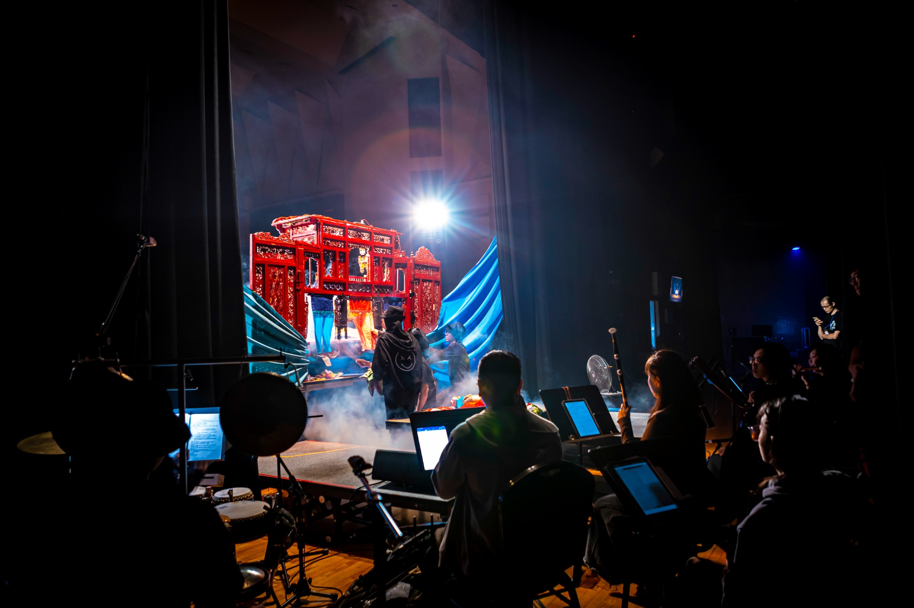

Lui Im Theater · Taiwan

以臺灣在地故事為題材、臺語原創為核心精神，融合歌仔調音樂，讓傳統掌中戲持續在當代舞台發聲。
Schedule
近期動向
演出、工作坊與交流活動集中在這裡。粉絲不用翻貼文，就能直接掌握雷音接下來在哪裡。
讀取近期行程…
About
關於雷音
雷音劇坊由陳建霖於 2020 年創立，以推廣與傳承臺灣布袋戲為宗旨。劇坊創作長期以臺灣在地故事為題材、臺語原創為核心精神，並融入歌仔調音樂，形成兼具布袋戲操偶、臺語口白、傳統後場與當代劇場意識的創作特色。
團員持續透過舞台實踐精進操偶、口白與樂器演奏，也鑽研偶頭雕刻彩繪、服飾、盔帽及道具製作等工藝；除舞臺製作外，亦長期投入校園、社團與寒暑假布袋戲推廣，讓傳統藝術走入新的觀眾世代。
「雷」相傳為戲曲祖師田都元帥之姓；「音」則呼應戲曲後場音樂。以「雷音」為名，既感念祖師，也寄望掌中戲之聲如雷遠播。
2024
新北市傑出演藝團隊
2022
第 16 屆金掌獎評審團特別獎
2021
第 15 屆金掌獎入圍
2021
第 3 屆青年金掌獎入圍

Behind the scenes
台前一刻
台後千工
戲台前看到的是幾十分鐘的演出；戲台後，是演師、樂師、技術與戲偶同時運轉的另一個世界。







Productions
作品
每一齣作品都有自己的故事、主創與巡演足跡。從這裡開始，讓作品不只停留在一場演出。

Featured production · 2025—2026
歌仔調布袋戲《青瞑的龍蛇無青瞑》
從臺南南鯤鯓河川傳說出發，讓被稱作「青瞑」的龍與蛇重新說自己的故事。全劇以臺語、布袋戲操偶與歌仔調後場交織地方記憶、環境想像與跨世代觀看。
People
一起讓戲
活起來的人
演師、演員、樂師、劇作與行政，共同構成雷音劇坊的創作與演出現場。點進成員頁即可閱讀個人經歷。